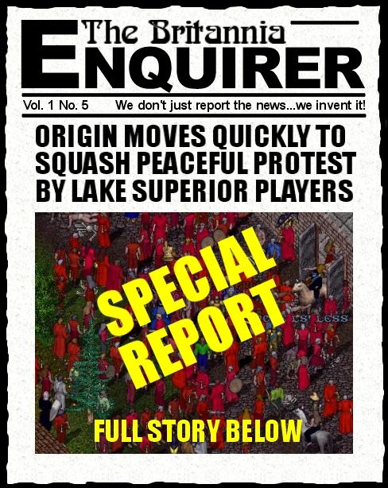

By now you will have probably heard of the large demonstration that took place on Atlantic by Lake Superior players upset with the repeated breakdown of their shard. And you have probably also heard of OSI's 'solution' (i.e. to ban everyone there). Well normally I try to deal with issues in a humorous way but this one just stuck in my craw so here's my take on the whole mess.
Now I don't want to get off on a rant here.... Wait! Yes I do. Frankly there is one thing that disturbs me greatly about that recent protest by the Lake Superior players. And it is NOT the fact that they gathered on Atlantic and protested - it is the other people who came on the boards like a bunch of old women who just found out their Bingo night was cancelled, and dis'd the LS players for their action. If the protestors could have made their point on LS, I am sure they would have, but the trouble was LS was down - repeatedly down. So they took the next course of action available to them. They picked another shard (I believe that even under the notorious TOS [terms of service] we are still are allowed to create characters on any shard) and protested there. Some of you who were so quick to speak out against that minor inconvenience (i.e. Lag … like that is something new) to the Atlantic Players, should really give your heads a hard shake. For Pete's sake, we are supposed to be a community here! These are your fellow players! If Pacific was dying more often than ImaNewbie at a PK convention in Felucca, like LS has been lately, I would be considering exactly the same action. The right to assembly and peaceful protest is not one to be dismissed lightly, especially with the lame defense that OSI is a corporation and, as such, can do whatever the hell they like. OSI's knee-jerk, "Get out the Batons and Pepper Spray!" reaction to ban everyone who was standing there was Draconian, excessive and frankly stupid. All the "My UO's" in the world ain't gonna mean diddley if players feel they have no voice in this supposedly ever-expanding multiverse. If there was a few people there acting up and not behaving responsibly, then answer me this. When have you ever been to any event of any size in UO when there were not people there for the sole purpose of being dorks and ruining whatever was being attempted? Was that reason to ban every person there? Hell, Lord British himself couldn't even hold a gathering without being ganked by someone looking to be noticed, (Raine?) way back in the early days of the game. My point here is that instead of jumping on the 'let's all kiss up to OSI bandwagon', try and understand the frustration and helpless feeling of the LS players when day after day, hour after hour, the game they have worked hard to build characters in, and are paying good money for, is acting just about as reliable as a ten year old Yugo. And don't give me that crap about they could move to another shard. It takes months, in many cases years to build up the characters, friendships, and all the rest that goes with playing in a game like UO for any length of time. Going on Test Center and creating a 7X gm just don't do it. So next time, people - Have a little goddamn compassion for your fellow players. Because, next time it could be your shard that's in the dumpster. The North American players should feel especially saddened by this. In both Canada and the United States we have a fine tradition of Freedom of Speech and Assembly that needs to be protected at all costs. To say this does not apply to UO because it is a Corporation and for some reason therefore immune, is ludicrous. UO bills itself in its advertising as a community of players and, as such, must be prepared to listen to the assembled voice of those players (in-game and out), and take their lumps when events reach a breaking point as they have in the case of Lake Superior.
Of course, that's just my opinion, I could be wrong.... (apologies to Dennis Miller)
later…Tryon
One more thing, here is a little quote for you:
The only way to make sure people you agree
with can speak is to support the rights of
people you don't agree with.
~ Eleanor Holmes Norton ~